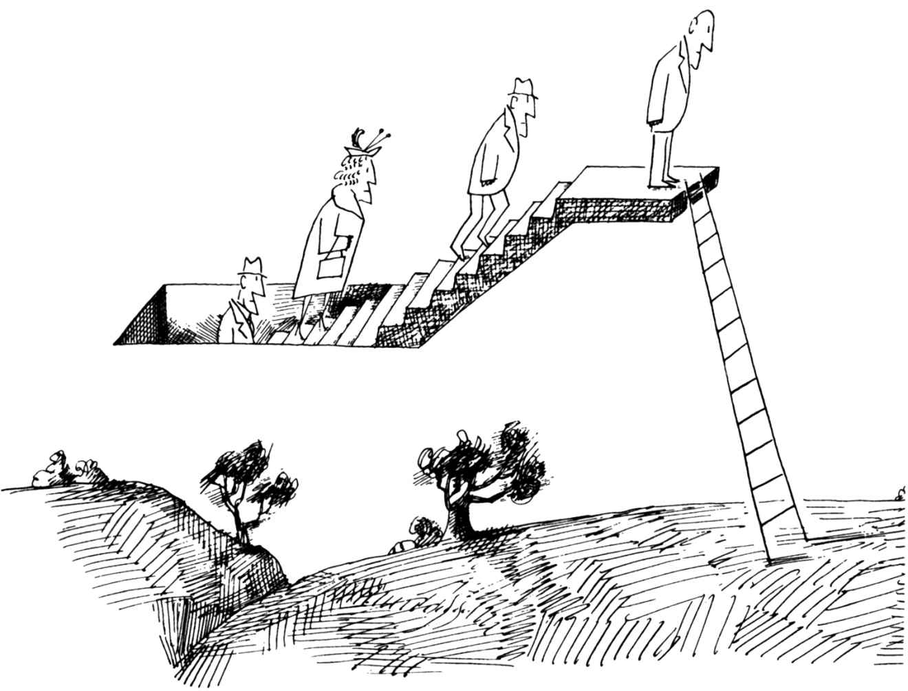
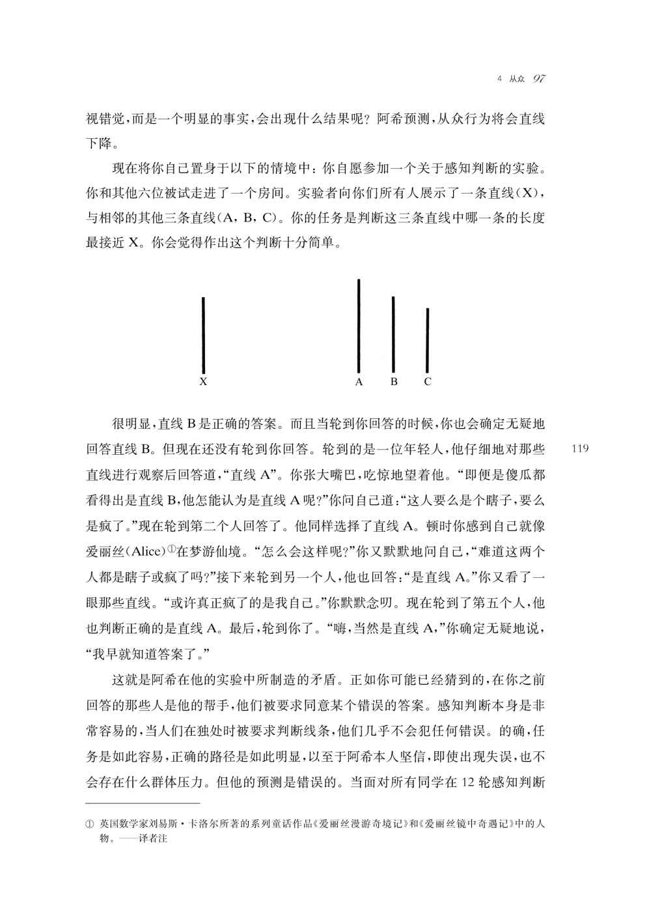

本图来源于《纽约客》1965年4月24日。
Saul Steinberg，Untitled drawing，ink on paper.
Originally published in The New Yorker，April 24，1965.
©The Saul Steinberg Foundation/Artists Rights Society（ARS），New York
突然有人开始跑了起来。也许他只是突然想起来要和自己妻子约会的事情，而现在他却迟到了。不管是什么，他在宽阔的街道上向东跑去（可能是去马拉莫餐馆，一个男人最喜爱与妻子约会的地方）。又有人开始跑了起来，也许是个兴高采烈的报童。另外一个人，一个胖胖的绅士，也突然小跑起来。十分钟内，从工会车站到法院，大街上的每个人都在奔跑。一声响亮的咕哝渐渐变成了可怕的“大坝”这个词。“大坝决堤了！”这种恐惧是由一个坐在电动车上的小老太太、交通警察或一个小男孩说出来的；没有人知道是谁，现在这一点也并不重要了。两千多人突然奔跑起来。四面都是“往东跑！”的喊声，远离河流，向东安全。“向东跑！向东跑！”一个身材高挑、眼神冷酷、下巴尖峭的女人从我身边跑过，沿着街道中央跑过去。我仍然不知道是怎么回事，尽管所有的人都在喊叫。我费了一番气力才追到那个女人旁边，她虽然五十多岁了，但从她那轻盈优美的奔跑姿势中，看得出她身体棒极了。“发生了什么事情？”我问道。她快速地瞥了我一眼，然后又继续将目光投向前方，稍稍加快了脚步。“别问我，去问上帝吧！”她说道。1
尽管有点滑稽可笑，但这个来自伟大的幽默作家詹姆斯·瑟伯（James Thurber）自传的故事，是有关从众现象恰当的例证。一两个人开始奔跑是出于他们自己的原因；不久，每个人都在奔跑。为什么会这样？因为其他人都在跑。在瑟伯的故事里，当奔跑者们意识到大坝根本没有决堤时，他们会觉得自己很愚蠢。然而，假如他们没有从众，而大坝真的决堤了，他们又会感到自己有多么愚蠢呢？
从众是好是坏？乍一听，是一个可笑的问题。然而，这个词本身的确具有评价的功能。因此，在美国文化中，被称为个人主义者或特立独行者，让人联想到一位站在山顶上的孤傲的牛仔，他的肩膀上挎着一杆来复枪，在夕阳西下的时候，微风吹拂着他的头发。在这种文化中，称某人为从众者是一种侮辱。这个词让人联想到一个盲目追随他人的人：穿着制服的企业高管；仿效朋友的服饰、谈吐和举止的青少年；人们开始相信一些末日预言或阴谋论，因为“他们认识的每个人”都相信。每个人总能回想起某个从众者的形象，而且他很少是那种刻意奉承者。
人类是社会性动物这一事实的一个后果，便是我们生活在与个性相关的价值观和与从众相关的价值观的博弈之中。我们可以用同义词来表达十分不同的形象。对于个体主义者或非从众主义者，我们可以用“离经叛道”这个词来代替；对于从众主义者，我们可以称之为团队合作者。无论如何，离经叛道不再让人们联想到孤傲的牛仔；同样，团队合作者也不会让人联想到盲从的白领、青少年或阴谋论者。我们的文化同样对从众（团队合作行为）和不从众（越轨行为）持矛盾态度。例如，20世纪50年代的畅销书之一是约翰·F·肯尼迪（当时还是未来总统）的书，他在书中赞扬了几位政治家在抵制政治压力以顺应潮流方面的勇气。换句话说，肯尼迪赞扬的是那些不落俗套和表现欠佳的团队成员，他们缺乏与他们的党派或选民和谐相处的能力。这些特立独行的人赢得了肯尼迪的赞扬，但是在他们采取行动的时候，他们的同事们普遍感到很不高兴——事实上，大多数人都对他们所看到的“离经叛道”和不遵守党的路线感到愤怒。那些特立独行者要撰写有趣的故事，正是因为他们经常受到周围人的恶劣对待。尽管我们在历史上或电影中都很欣赏他们，但在日常生活中，我们倾向于从众主义者。
这一观察得到了许多社会心理学经典实验的有力支持。在斯坦利·沙赫特（Stanley Schachter）的一篇论文中，2一群男性大学生讨论了某个案件的卷宗，该卷宗决定了一名因违法而被捕的青少年的命运。在阅读了该卷宗之后，要求每个小组讨论这个问题，并针对这个年轻人的惩罚达成一致意见，从“非常宽大的判决”到“非常严厉的判决”。每个小组由九名被试组成，其中六名是真被试，其余三名是实验者的帮手。这些帮手依次扮演事前安排的三种角色中的一种，他们事先经过了精心的演练：仿效者，所采取的立场与真被试的一般立场相符合；偏离者，采取与小组的一般倾向针锋相对的立场；立场改变者，他们最初采取的是与偏离者类似的立场，随着讨论的进行，渐渐转向了仿效者，采取了从众的立场。
你认为哪类参与者最受欢迎？是立场转变者吗？绝非如此。最受欢迎的是与小组标准相一致的仿效者，最不受欢迎的是偏离者。此外，也发现了另一种可以预见的结果，交流模式变化带来的影响：在讨论的初期，小组花费了相当多的时间试图说服偏离者接受他们的观点；但当情况变得明朗时，这个偏离者便不会让步，其他人也基本上忽略了他，也就是说他基本上被排除在小组讨论之外。在后续的实验中，艾瑞·克鲁格兰斯基（Arie Kruglanski）和唐娜·韦伯斯特（Donna Webster）3发现，如果在临近截止时间前（当小组成员感觉到了将要结束讨论的紧要关头），而不是在讨论的早期提出异议，不循常规者尤其不受欢迎。
因此实证资料显示，至少在需要作出决策的团队中，人们更倾向于喜欢从众主义者，而并不是那些非从众主义者。这种倾向并非是不合理的。正是通过牺牲个人愿望与他人和谐相处的倾向，我们人类才拥有了巨大的进化优势；我们所具有的团队合作和传播文化的能力，使人类得以成长壮大。我们可以嘲笑瑟伯笔下的众人逃离一场空穴来风的洪水，但我们也应该对它的运作机制感到惊奇：就像公园里的一群鸟一样，一只鸟会将信息迅速传播开来，整个鸟群会顷刻间全都飞走。在我们人类作为狩猎—采集者的年代里，从众者的迅速反应无疑是至关重要的；事实上，不从众可能是灾难性的。假定某一天我突然厌倦了做一名从众者，于是我跳上自己的车子，开始沿着路的左侧行驶——这并非是一种十分聪明或适应性强的来表达我固执的个体主义的方式——如果你碰巧在同一条街的马路对面向我驶来，那对你是极不公平的。
然而，尽管我们从众的本性是可以适应的，但从历史上看，人们的这种行为倾向也会导致悲剧，从足球比赛的赛后骚乱到阿道夫·希特勒（Adolf Hitler）的狂热追随者齐声呼喊“希特勒万岁”。从众不仅发生在无目的性的人群之中，也会发生在组织严密的群体中，这些群体的成员对此应该有更多了解。希特勒的高级顾问之一阿尔伯特·斯皮尔（Albert Speer），在回忆录中将希特勒周围的人们描述为一个完全一致的圈子，在那里偏离是不被允许的。在这样的氛围中，即使是最野蛮的行动也似乎是合理的，因为他们没有不同意见（表现出一致同意的假象），任何顾问都无法接受其他选择存在的可能性。斯皮尔写道：
在正常情况下，那些背离现实的人很快就会被周围人嘲笑、批评并加以纠正。在第三帝国没有这样的纠正机制。与此相反，每一次自我欺骗都会被成倍地放大，就像置身于一个哈哈镜装饰而成的大厅，成为一个由反复得到确认的奇怪的虚幻世界，它不再与严酷的外部世界保持任何联系。在那些镜子里，除了自己的脸，我什么也看不见。4
一个离我们更近的例子，可以想想白宫工作人员和高级顾问同前总统理查德·尼克松（Richard Nixon）一起参与的对水门事件的掩盖。在这里，政府的高级官员（其中许多人是律师）作了伪证，销毁了证据，并且毫不掩饰地去行贿。这至少可以部分地归因于20世纪70年代早期，在总统周围形成的那个忠贞不二的封闭圈子。在这个圈子被打破之前，这种极端的忠诚使得偏离根本不可想象。有一次，几位高级顾问看到他们的违法行为似乎感到很惊讶，就如同在做噩梦一样。尼克松的白宫律师约翰·迪恩（John Dean）这样写道：
当你早上拿起报纸，读到了替代昨天封面报道的新的封面报道后，你开始相信今天的新闻是真实的。这一过程在一直持续，直到最后，白宫里形成了一种脱离实际的氛围：如果你反复不断地讲某件事情，它便会成为现实。例如，当媒体得知对新闻记者和白宫工作人员的通话进行窃听，此时断然否认已经不能奏效，便有人声称这是国家安全问题。我相信很多人都相信窃听是为了国家安全，但它的确不是，而是事后编造出来的辩护理由。但是当他们讲出这些话的时候，你知道，他们是真的相信。5
有时，从众的需要甚至会使个人对即将发生的灾难保持沉默。1986年1月28日，挑战者号航天飞机升空几秒钟后爆炸。包括一位深受爱戴的教师克里斯塔·麦考利夫（Christa McAuliffe，通过竞争而成为进入太空的第一位平民）在内的七名宇航员，在一团浓烟和火焰中丧生。不知何故，尽管工程师们强烈反对并警告说助推火箭接头的O型环存在缺陷，但他们仍然决定继续发射。美国国家航空航天局（NASA）的管理人员做出了发射的最终决定，他们并非不知道存在危险，也不是对宇航员的生命漠不关心，更不是缺陷助推器火箭的制造者。然而，在美国国家航空航天局对火箭发射持有极高预期的压力下，那些最终被证明正确的持不同意见的决策者，要么转向了多数人的立场，要么被排除在对话之外，就像斯坦利·沙赫特实验中的偏离者一样。
让我们来梳理一下。除了他们都做出了可怕的决策之外，希特勒的核心圈子、尼克松的亲密顾问、美国国家航空航天局的管理者，他们有何共同之处呢？他们都是一个一个没有不同意见、相对有凝聚力的团体。当这些团体被要求作出决定时，他们可能成为欧文·贾尼斯（Irving Janis）所说的团体思维（groupthink）6的牺牲品，这种思维方式发生在有凝聚力的团体中，在这种团体中，成员对一致性的需求超越了他们现实地评估行动方案及其替代方案的能力。参与这类适应不良决策策略的团体通常认为自己是无懈可击的；他们被乐观所蒙蔽。这种乐观情绪在不满情绪被抑制时会得以强化。面对从众的压力，小组成员可能会怀疑他们自己的保留意见，并避免发表这些意见，就像第1章中那位假想的朋友萨姆，他在得知自己和同伴们的看法不一致后，隐瞒了自己的真实观点。
我引用这些例子，并非想说明因为从众会自然地降临到人类的身上，所以那些做出错误决定的人应该得到理解。相反，我认为理解从众的力量及其心理运作机制是至关重要的，这样当它令人们感到不适并且导致众人犯错的时候，我们便可以减少从众。只有通过更深入地挖掘和努力理解这些过程，我们才有希望改进人们的决策方式，减少未来灾难发生的频率。
什么是从众
从众可以定义为一个人的行为或意见的改变，受到了来自另一个人或一群人的真实或想象的压力的结果。正如进化论所预测的那样，它开始于个体发育的早期，即婴儿时期，而且有其神经系统的基础。
从众的生理基础 你可以通过观察我们在生命的早期阶段就开始互相模仿，来了解这种调整对我们物种的影响。虽然我们并非天生的模仿者，7但婴儿们通过社会交往很早就学会了对所看到的面孔做出同样的反应，8事实上，他们会更多地关注那些与自己的面部表情相一致的面孔。9
当人们互相交谈时，他们会经常模仿对方的非语言行为和举止，这种现象被称为变色龙效应（chameleon effect）。坦妮亚·沙特朗（Tanya Chartrand）和约翰·巴赫（John Bargh）10让学生们和他们的某个帮手一起讨论了一组照片，这位帮手在交谈中经常抚摸自己的脸部或者抖动自己的脚。在互动的过程中，与抚摸脸部的帮手分在一组的学生抚摸自己的脸的次数很多；与抖动脚的帮手分在一组的学生更有可能抖动自己的脚。在另一堂课上，实验者的帮手们或者巧妙地让被试感受到自己在研究他们的姿势和行为举止，比如交叉双腿、抚摸脸部、摆弄头发；或者什么也不做。在讨论过后，被试对他们的合作伙伴进行了评价，结果他们更喜欢变色龙，而不是非变色龙。这一发现表明，我们模仿他人，因为这样做既体现出亲密感，也会产生亲密感，创造出一种“社交粘合剂”。11那些特别擅长改变视角、用别人的眼睛看世界的人是更好的变色龙，因此更受欢迎。12故意模仿别人以赢得别人的好感，则会适得其反。13希拉里·克林顿（Hillary Clinton）在南方竞选时，因采用南方的拖腔（并说“你们都是”）而受到批评。14
尽管许多动物会模仿它们的同类，但人类是极易进行模仿的。一些神经科学家将这一事实归因于镜像神经元，这是一种高度专门化的脑细胞，当我们执行某个动作或者当我们看到另一个人执行相同的动作时都会被激活。想想当你看到一位喜剧演员在舞台上被炸伤时你是如何感到危惧的，或者当你看到另一个人的痛苦时你是如何担忧的。镜像神经元能够产生同理心，但一定不能保证：当人们看到自己不喜欢的人或比自己拥有更少权力和地位的人时，它们便会关闭。15
镜像系统的主要功能之一是促进社会学习（social learning），即人们通过观察来学习的过程。丹尼尔·豪（Daniel Haun）16领导的一项实验研究发现，蹒跚学步的孩子会模仿同龄人的行为，即使这样做意味着要忽略先前的学习并失去奖励。在一项研究中，孩子们得到了一个球和拼图盒，盒里面有三个球大小的洞，他们很快就知道把球放在某个特定的洞里（比如中间的洞）就能得到一块巧克力。在经历了第一阶段学习之后，每个孩子都加入了一群由其他学步期儿童组成的小组，这些学步期儿童通过把球扔到另外一个洞里（如左边的洞）来学习如何获得巧克力。在第二阶段，幼儿会因为他们把球放进了和先前同样的洞里而继续得到巧克力，但是许多人表现出与他们的同龄人相反的倾向，选择放弃他们的学习以及因此而可能获得的巧克力，而倾向于顺从那些学习了稍微不同规则的孩子们。当同样的实验在黑猩猩和猩猩（也是高度社会性的动物）身上进行时，它们并没有表现出这类从众的倾向；它们坚持的行为使自己的回报最大化。我们再一次看到，在人类身上，从众的冲动是如何战胜个人偏好的——即便是面对着巧克力这样的奖赏。
影响从众的复杂因素 大多数从众行为发生在没有任何“压力感”的情况下。例如，喜剧电视中的背景笑声无所不在，以致我们很难注意到，然而它们所传达的信息——其他人都发现了可笑的事——会深刻地影响着我们对同一件事情的反应。
1984年，在美国政坛的一个著名事件中，73岁的总统罗纳德·里根（Ronald Reagan）在竞选连任时遇到了困难。由于里根已经是美国历史上最老的总统，人们普遍担心他年纪太大，不能胜任这份工作。他的年轻对手沃尔特·蒙代尔（Walter Mondale）曾担任过副总统并且是一位颇受欢迎的参议员；他既有经验，也比较年轻而且充满活力。然而，里根却以压倒性优势击败了蒙代尔。里根是如何让选民放心并取得决定性胜利的呢？在第二次辩论中，里根表现出了一种幽默感，尤其是当被问及他是否太老而不适合当总统时，他说：“我不会把年龄作为竞选中的一个议题。”“我不会为了政治目的，而利用我对手的过于年轻和缺乏经验。”包括蒙代尔在内的观众对里根这具有讽刺意味的机智回应报以大笑和掌声，许多选民在那一刻改变了对里根的看法，显然这一回应和其他预先演练好的幽默打消了选民的疑虑。他的精神状态仍然适合于为国家服务。
许多年后，在一个巧妙的实验中，史蒂文·费恩（Steven Fein）和他的同事17为从未听过或看过这场著名辩论的大学生（实况播出时他们还是婴儿）播放了这场辩论的录音带。在基准条件下，他们像1984年人们实际看到的那样进行辩论；在第二种条件下，他删除了里根最幽默的两条台词，包括年轻和缺乏经验的幽默回应；在第三种情况下，他留下了两条有趣的台词，但删除了观众的笑声和掌声。观看之后，被试评价了他们对两位候选人的喜爱程度，并评估了谁在辩论中表现得更好。对原录音带的两个改动都产生了不同效果：完全删除里根的幽默回应，也就等于完全消除了里根赢得辩论的感觉，但关键不是幽默本身。当观察者听到里根的幽默回应而没有看到观众的反应时，大多数人认为蒙代尔赢了；如果播出了笑声，他们则认为里根赢了！不需要直接的压力，只要其他人在笑，就可以起到这样的效果。很多从众行为都是这样产生的；环境中的社会暗示告诉我们其他人的感觉、想法或行为，而这些又会反过来影响我们的感觉、想法和行为。
让我们回到我们的朋友萨姆，那位假想的大学生。记得萨姆在电视上看到一位参议员候选人，这位候选人的真诚给他留下了很好的印象。然而，他的朋友们一致认为这位候选人不诚实，这给他带来了很大的社会压力，他至少口头上同意了他们的意见。
就连这个虚拟的小故事也引发了一些有趣的问题：（1）是什么原因导致人们服从群体压力？具体来说，萨姆感受到了什么？（2）群体压力的性质是什么？具体而言，萨姆的朋友通过什么来诱导他从众？在那段短暂而令人不安的时间里，当萨姆得知他的朋友都不同意他的观点时，他是否改变了自己对候选人的看法？还是萨姆仍然坚持他原有的看法，只是口头上改变了他对候选人的看法？如果他改变了主意，是永久的还是仅限于那天晚上？
不幸的是，因为萨姆是一个假想的人物，我们不能问他。而且，即使是一个真实存在的萨姆也不能给我们提供一个准确的解释，这是值得怀疑的，因为即便人类能够非常准确地解释自己的行为，18但是在这种情况下还会有太多的其他影响因素。我们不知道萨姆对他最初的观点有多自信；我们不知道他对候选人的演讲有多了解，或者他有多喜欢和他一同收看的那些人；我们不知道萨姆是否认为自己是一个真诚的评判者，或者他是否认为其他人也是真诚的评判者；我们不知道萨姆通常是一个坚定的人，还是一个不自信的人；我们也不知道萨姆在学习了一天之后还会有多强的意志力来做出真诚判断，等等。
我们所能做的就是进行实验研究，让人们面对像萨姆那样的困境，在那里我们有能力控制和改变我们认为可能影响从众的因素。很多社会心理学的研究都做到了这一点，而这一切可追溯到穆扎法尔·谢里夫（Muzafer Sherif）和所罗门·阿希（Soloman Asch）的早期研究。
谢里夫和阿希的经典实验研究 假定你在一个黑暗的房间里，你从远处凝视着一个固定的光点，过上一会儿，光就会出现移动，这是一种视错觉，称为游动效应（auto-kinetic effect）。谢里夫19利用这种错觉来研究感知是如何受到社会影响的。他让大学生们坐在一个黑暗的房间里，观察一个光点，然后，每次它“移动”的时候，报告它有多远。每个学生会单独做几次试验，经过这几次试验，会确定一个可靠的距离，通常在2到6英寸之间。然后，他们被分成若干小组待在黑暗的房间里，并被要求重复这项任务，这次要大声报告他们的估计。谢里夫注意到了其他人的存在所带来的强烈影响：几乎每个人的判断都开始朝着群体平均水平的方向趋近。例如，如果我一个人的时候通常看到光移动2英寸，但是我的队友们倾向于看到它移动6英寸，我现在开始报告大约4英寸的移动。同样，那些最初看到更多运动的人在听到我的意见后会报告他们看到的更少。更重要的是，这种变化会始终存在。在了解到团体的某种意见后，成员们再次受到考验，他们的回答不断反映出该团体对自己判断的影响。谢里夫后来发现，他可以通过让他的帮手提供的任意估计来确立群体规范。只要与实际标准的偏差不是太大，他就可以将这个团体的意见引导到他所希望的任何方向。
估计一个光点移动了多少具有内在的模糊性。几年后，所罗门·阿希希望考察的是，当判断的对象非常确切的时候会发生什么。20假如你眼前的判断不是一种视错觉，而是一个明显的事实，会出现什么结果呢？阿希预测，从众行为将会直线下降。
现在将你自己置身于以下的情境中：你自愿参加一个关于感知判断的实验。你和其他六位被试走进了一个房间。实验者向你们所有人展示了一条直线（X），与相邻的其他三条直线（A，B，C）。你的任务是判断这三条直线中哪一条的长度最接近X。你会觉得作出这个判断十分简单。

很明显，直线B是正确的答案。而且当轮到你回答的时候，你也会确定无疑地回答直线B。但现在还没有轮到你回答。轮到的是一位年轻人，他仔细地对那些直线进行观察后回答道，“直线A”。你张大嘴巴，吃惊地望着他。“即便是傻瓜都看得出是直线B，他怎能认为是直线A呢？”你问自己道：“这人要么是个瞎子，要么是疯了。”现在轮到第二个人回答了。他同样选择了直线A。顿时你感到自己就像爱丽丝（Alice）[1]在梦游仙境。“怎么会这样呢？”你又默默地问自己，“难道这两个人都是瞎子或疯了吗？”接下来轮到另一个人，他也回答：“是直线A。”你又看了一眼那些直线。“或许真正疯了的是我自己。”你默默念叨。现在轮到了第五个人，他也判断正确的是直线A。最后，轮到你了。“嗨，当然是直线A，”你确定无疑地说，“我早就知道答案了。”
这就是阿希在他的实验中所制造的矛盾。正如你可能已经猜到的，在你之前回答的那些人是他的帮手，他们被要求同意某个错误的答案。感知判断本身是非常容易的，当人们在独处时被要求判断线条，他们几乎不会犯任何错误。的确，任务是如此容易，正确的路径是如此明显，以至于阿希本人坚信，即使出现失误，也不会存在什么群体压力。但他的预测是错误的。当面对所有同学在12轮感知判断中一致做出不正确的回答时，为了与其他人保持一致大约四分之三的被试至少出现了一次错误的回答。在全部感知判断中，平均有35%的判断与错误判断保持了一致。
阿希在20世纪中叶进行了他的实验。尽管研究结果颇具影响力，但人们还是倾向于以当代美国大学生已经今非昔比为由，对他的研究结果加以忽略。随着计算机和互联网的出现，你可能认为人类已经变得更加复杂，因此不太容易受到这种群体压力的影响，但事实并非如此。近年来，阿希实验被成功地重复了很多次。在国家电视台的一次特别引人注目的演示中，安东尼·普莱特肯尼斯（Anthony Pratkanis）21重复了这个实验——就像阿希50年前所做的那样。这个重复实验的被试也是大学生，他们中许多人认为自己是特立独行的。但实验结果却几乎和阿希的实验完全一致。
然而，在抵制群体压力的倾向上存在着一些文化差异。通过民间智慧的对比可以很好地说明这一点：在美国，人们会说，“吱吱叫的车轮先上油”（意思是，“有事，就大声说出来！”）；在日本，人们说，“突起的钉子先敲下”（意思是说，“不要偏离你的团队”）。罗德·邦德（Rod Bond）和彼得·史密斯（Peter Smith）22分析了在17个不同国家使用阿希办法进行的133项实验后发现，与个体主义社会（如美国和法国）相比，在鲜明地重视群体和谐（如日本）的集群主义社会中，从众现象更为普遍。
然而，无论人们生活在哪个国家，对群体压力加以抵抗都是非常困难的，不从众带来的痛苦不仅表现于人们的面部表情，而且在他们的神经活动中也会引起大脑的不适。23格雷戈里·伯恩斯（Gregory Berns）和他的合作者采用功能性核磁共振成像技术（fMRI）来监测参与者的神经活动，这些图像显示了那些对群体压力进行抵抗的被试杏仁核（大脑中与疼痛、恐惧和情绪不适相关的区域）的活动会增强，表现出与抵抗身体疼痛的被试同样的反应，24就像我在社会排斥实验中所看到的。25
这些实验创造的情境特别有趣，因为与我们倾向于从众的许多情境不同，没有明确的个性限制。更常见的是，对不合规则行为的制裁是明确的。例如，我一直讨厌打领带——这个时代终于迎合了我，现在很少需要打领带。但在20世纪60年代，当我还是一名年轻教授的时候，着装更为规范正式。这意味着，如果我去一家高级餐厅参加一个晚上的庆祝活动，妈妈会礼貌地（但坚定地）告诉我，如果我没有戴上他们提供的领带，那就不会有我的位子。这样，我要么戴上领带，在餐馆吃饭；要么选择离开，敞开脖子，个人舒服了，但却忍饥挨饿。在这种情况下，与许多其他情况一样，不从众的负面后果是确定的。同样地，詹妮斯在对团体思维的研究中也发现，通常总会有一两个人采取行动来执行群体的规范。正如詹妮斯所言，这些无需任命的卫道士，会要求人们保持一致并按共识行事。就像妈妈在餐厅里所交代的：门卫已经明确表示，如果你想有自己的座位，你就必须遵守群体的规范。
但是在阿希实验与萨姆和他的朋友们的案例中，情况却要复杂得多。在这些情况下，没有明确的服从奖励，没有明确的惩罚行为，也没有思想卫道士推动偏离者达成一致，只是人们以事实的方式报告他们所看到的。那么，为什么阿希的被试会从众呢？
从众动机：归属还是信息获取 从众的主要原因有两个：因为别人是有价值信息的来源，或者因为与别人相差太大令人感到不适；从众通过表达我们的相似性和思想上的亲近关系，来确保我们在某个群体中的地位。前一个原因基于丰富的信息：人们面对采取一致意见的多数人，会认为自己的观点因某种原因而出现了错误。后一个原因则基于规范：人们会“随大流”，但内心相信他们最初的判断是正确的，以求被大多数人所接受或避免因意见不同而被他们所厌恶。在阿希实验以及其他一些直接进行判断的实验中，个体的行为在很大程度上似乎是为了避免产生被排斥的感觉。我们可以从这样一个事实推断出这一点：当允许人们不公开回答时，他们对直线匹配的问题都会给出诚实的意见。
同时，在许多情况下，我们顺从他人的行为是因为：随着物质现实变得越来越不确定，人们越来越依赖“社会现实”。26也就是说，其他人的行为是了解正在发生事情的最佳指南。在这种情况下，一致性尤其有可能影响我们对现实的看法和感知，就像谢里夫实验中的学生和瑟伯在本章开头描述的场景一样：如果有人表现出某种行为，那一定是有道理的。
有这样一个例子可以澄清规范一致性与信息一致性之间的区别。几年前，我还住在一个陌生的大楼里。有一次我想上厕所，在看到“洗手间”的标志之后，我找到了常见的两扇门，但是不知是谁把上面的标志去掉了，所以我无法区分男厕和女厕。这真是一个两难的境地，我不敢猜测，因为我害怕进了女厕所感到尴尬，或者让任何一位待在里面的女士感到尴尬（或者害怕）。当我踌躇不定、尴尬地站在那里等候的时候，我左边的门开了，有人走了出来。我松了一口气，走了进去，因为我得到了正确的信息。
很多时候，其他人是一个很好的信息来源，一致性满足了我们对正确信息和归属感的需求。在母亲节给自己的母亲打个电话，和自己的朋友一起去一个收留无家可归者的收容所工作，在考试中努力学习以取得好成绩，这些都是人们所做的，也是应该做的。然而，有时候，我们就像是阿希实验中的学生，我们对正确信息的需要与我们对归属的需要会出现冲突。假定你是这个实验的被试，并且你最初相信正确的答案是直线B，那么说出来也许能够满足你对正确信息的需要——但是这样做也可能会违背你同龄人的期望，他们可能会认为你很怪异。选择直线A可能会赢得其他人的认可，但除非你确信他们的意见是正确的，否则这样做将违背你对正确信息的渴望。
坚持正确意见与迎合群体之间的这种基本困境，是导致我们一些最大失败的核心所在。在乔舒亚每年的社会心理学课上，学生们都会匿名地写下他们最令人遗憾的从众行为，假如他们能够回到过去，他们都会改变这些行为。年复一年，有相当多的学生承认曾欺负、戏弄或羞辱他人——这样做，除了他们同龄人的暗示或实际认可之外，没有任何其他理由。一个学生写道：“我知道我会毁了这个孩子。”某天晚上在夏令营里，他无情地戏弄了一个“长得滑稽的男孩”。“我能感受到他强忍住自己的哭声。他就躺在离我几张床远的地方，在黑暗中，恳求我们不要再叫我们给他起的绰号：猴子。但受到了同伴们笑声的鼓动，我仍在不停地喊着他的绰号。我现在仍然能够听到他们那咯咯的笑声，而我毁了这个可怜孩子的生活……我从来没有原谅过自己。”另一个学生后悔在八年级的时候，母亲为了省钱给她买了一件不带Abercrombie[2]标志的便宜点的衬衫，为此她一个月里拒绝和母亲说话。Abercrombie标志最为当时的八年级学生所珍爱。她写道：“我真不敢相信自己有多恨我妈妈。”“我的衬衫上居然没有一只小驼鹿，我想杀了她。”另一个学生后悔自己在目睹了一场谋杀后，一直没有告诉警察。他说：“就发生在我家附近，我们竟然没有报告警察。”“这是习以为常的做法。”
尽管社会心理学专业的学生们在回忆过去的从众行为时会给出自己的解释，但我们大多数人会认为，自己的动机主要是希望获得正确信息，而其他人的动机主要是为了迎合群体。当人们不自觉地观察一个类似阿希从众的实验时，他们通常会低估自己的从众程度，而高估他人的从众程度。27
正如我们所看到的，有时从众是由于害怕违反规范，有时则是由于澄清含糊不清的信息。但是，对二者加以区分并不总是轻而易举的。通常，从众行为是相同的；区别它们的关键因素在于是否存在惩罚性因素。想象一下，在神秘的国家马其顿，客人们在吃完饭后打嗝被认为是一种友好的举动，以此向主人表示他们很喜欢这顿饭。假设你不知道这一点，你访问的是一位自由民主党人的家庭，陪你访问的是一些美国国务院的外交官。如果饭后这些外交官开始打嗝，你也很有可能打嗝。他们给你提供了宝贵的信息：和他们一样打嗝，你们所做的是正确的事情。但假设你和一些粗鲁而强壮的年轻人呆在同一个家里，有人给你介绍，他们是自由散漫的奥林匹克重量级摔跤队。如果这些大块头饭后打嗝，你便可能不会效仿；你可能会认为这是一种不礼貌的行为。如果他们因为你的漠然而对你怒目而视，你可能真的会打嗝，这不是因为他们所提供的信息，而是因为你害怕被拒绝，你甚至可能害怕因为拒绝接受他们粗野的行为而被打断鼻梁。
为了获得有关适当行为的信息而观察他人所产生的从众，往往比为了被接纳或避免处罚所产生的从众具有更强大的力量。我认为，如果我们发现自己处于一种模棱两可的境地，我们必须使用他人的行为作为自己行为的模板，我们很可能在随后的类似场合重复我们新学到的行为，而没有任何暗示。当然，除非我们后来得到证据证明我们的行为不恰当或不正确，否则情况就是这样。因此，现在假设你被邀请回到那位自由民主党高官家里吃饭，但这次你是唯一的客人。问题是，饭后你是否会打嗝？如果你在他家吃了第一顿饭后打了个嗝，因为你意识到这是正确的做法（如果你和外交官一起吃饭的话，情况也会是这样），那么当你单独和高官吃饭的时候，你很可能打嗝。然而，如果你第一次打嗝是因为害怕被拒绝或受到惩罚（就像你在摔跤运动员的陪伴下吃饭一样），那么当单独做客时，你肯定不会打嗝。
增强或减弱从众的因素
萨姆会怎么做？他会被他的同学说服，认为他偏爱的参议员候选人是个骗子？还是只是为了被接纳而顺从他们的判断？考虑影响从众的因素，有助于回答这些问题。当然，这些因素也可以用来防止团体思维。
榜样的声望与受欢迎程度 当我们不清楚在某种情况下究竟发生了什么事情时，我们最有可能同那些行为可以提供最可靠信息的人保持一致。比如说，你住在一个很少有人乱穿马路（人们不愿意这么做）的小镇上，但为了节省几秒钟的时间你真的想在车水马龙的道路中间过街。现场实验显示，如果是一个衣着讲究而不是衣衫不整的人在乱穿马路，你更有可能去仿效他。28
在更宽泛的层面上，流行作家马尔科姆·格拉德威尔（Malcolm Gladwell）29指出，当受人尊敬、关系密切的人恰巧在正确的时间出现在正确的地点时，主要的社会趋势往往会通过从众机制突然发生戏剧性的变化。当一段视频传播开来，某种趋势也就变成了“流行”，或者某个品牌的鞋子突然成为了人们的必备品，这通常是因为一两个人与庞大的社交网络（例如，数千名Instagram[3]或Twitter[4]粉丝）有联系。他们开始穿着很酷的新衣服，这会导致其他喜好扮酷的人很快达到关键数量节点或“临界点”，于是流行趋势爆发。有影响力的人未必是专家；他们可以是那些看起来颇有名气的人，或者是某些为了出名而出名的人。当然，如今的网络红人是那些在Twitter或其他社交媒体上所发帖子能够吸引大量观众的人，其中许多人可能通过他们的网络转发帖子，然后他们的粉丝又会进一步转发。
当大量的人都在做某件事情时，人们尤其能够获得大量的信息。我应该去哪里吃饭？可以登录Yelp[5]查看一下群里的意见；我应该读什么书？可以看看亚马逊的流行趋势；哪辆流动餐车最好？我赌的是顾客队伍最长的那家。只要人群的判断彼此独立（就像那些向Yelp提交评论的陌生人集合一样），人群就可以提供比我们的个人猜测更好和更真实的预测。30
一致同意 当群体成员面对面时，像阿希研究的情况一样，决定一个人是否会从众的关键因素之一是其他人是否都持有相同的意见。“其他所有人”的群体中实际人数不需要太多，但需要获得最大程度的一致性；当达成一致的群体规模只有3人时，人们会像群体规模达到16人时一样顺从于群体压力。但是，当一致性被打破时，从众的压力也会被打破。即使是仅有一位成员采取了与你一致的观点，你的压力也会得到释放；在这种情况下，从众现象会急剧减少。31事实上，即使某位偏离者给出的是一个不同的错误的答案（要求回答直线C，而其中某个人回答是直线A），因为出现了一位持不同意见者，在场人的从众行为都会大幅降低，参与者很可能给出正确的回答：直线B。仅仅需要一位持不同意见者，便有可能极大削弱群体诱发从众的力量。32
表态 通过诱导一个人对他（她）最初的判断作出某种承诺，也可以减少对群体压力的顺从。想象一下你是一位大联盟棒球比赛的裁判。在第一垒出现了一次封杀，这时你当着5万球迷的面判跑垒者出局。比赛结束后，另外三位裁判都走过来对你说，他们认为跑垒者安全进垒了。这时你有多大可能性改变自己的裁定呢？假如，这三位裁判员都判定跑垒者安全进垒了，然后轮到你做出判断，又会出现什么情况呢？莫顿·多伊奇（Morton Deutsch）和哈罗德·杰拉德（Harold Gerard）33在一项实验中使用了阿希的办法进行了这种比较。他们发现，当被试没有事先做出表态时，大约25%的回答会顺从大多数人的错误判断。但是，当这些人在听到其他“裁判员”的裁判结果之前公开表达了自己的意见时，他们的新裁定中只有不到6%会表现出从众行为。
担责 假设你正在参与一个解决问题的小组讨论，而其他人正在向你施加压力，让你同意他们的决定。另外，假设你知道，在会议结束时，你必须向小组的其他成员证明你的决定是正确的。你觉得这对你的判断会产生什么影响？研究表明，在大多数情况下，这样的责任会增加你从众的倾向。34
但是，假如你同时也被告知，重要的是要尽可能地准确，那又会出现什么样的情形呢？为了回答这个问题，安德鲁·奎恩（Andrew Quinn）和巴巴里·施伦克尔（Barry Schlenker）35让人们接受了一项实验，目的是为了让他们服从错误的决定。在实验开始之前，实验者做了两件事：（1）他们让一半的被试记住尽可能精确的重要性，而另一半则记住合作的重要性；（2）他们要求在这两种实验条件下各一半的被试，在他们作出决定后必须向小组解释他们作出这种决定的理由。那些表现出最强独立性并作出最好决定的人，正好是那些看重准确性的人，他们必须向那些试图影响他们的人解释他们从众的理由。他们的行为比那些看重准确性但不需承担责任的人更为独立。这表明，除非人们清楚地知道自己要对一项愚蠢的从众决定负责，否则大多数人都会为了相安无事而去迎合他人。
自尊与安全 一般来说，自尊心较低的人比自尊心较高的人更容易屈服于群体压力。36如果让人们相信自己手头的任务根本不需要什么能力（比如判断直线的长度），他们的从众倾向就会增加。如果人们有机会在完成一项任务之前已经获得成功，从而对自己的能力充满自信，那么他们会比那些误打误撞的人更不容易从众。37
同样，我们在特定群体中的安全感决定了我们偏离其规范的程度。如果我们的朋友萨姆确切地感受到了观看辩论的人对他喜爱和接受的程度，与他对自己和这些人的关系没有把握相比，他会更容易表达不同意见。为了证明这一现象，詹姆斯·迪茨（James Dittes）和哈罗德·凯利（Harold Kelley）38招募了一批大学生并让他们加入一个享有声望的团体，随后告知他们，团队成员可以随时撤换任何一位参与者以提高效率。团队随后讨论了少年犯罪问题。讨论被定期地打断，以便于团队每个成员就其他人对小组的价值进行评估。讨论结束后，向每位成员展示了其他人是如何评价他的；事实上，他们给这些成员预先安排了错误的反馈。一些成员被引导认为自己很受欢迎并被接受，另外一些人则被引导认为自己不太受欢迎。每个成员的从众程度是通过他随后在进一步讨论中表达的观点以及在执行一个简单的感知任务时对群体压力的脆弱性来衡量的。那些被引导认为自己只有适度被接受的人比那些被引导认为自己完全被接受的人，更有可能遵守其他人制定的规范。一旦我们在团队中确立了一个安全的位置，我们就会放松下来，会更自由地表达我们的意见。
年龄 正如我们所看到的，即便是幼儿也会本能地顺应同龄人的行为。这是我们学习很多东西的途径，包括我们的说话方式和口音类型。39而对于10到25岁的年轻人来说，从众压力最为强烈。在此之前，大脑的自我控制系统——控制计划、思考未来、评估风险和抑制冲动——仍在发育。从远古时代起，成年人对青少年的观察就证明了这一点：由于同伴的存在，青少年的行为会发生极大的变化，而这种变化往往会对他们的健康造成损害。假如有同伴在车内，与成人驾驶者相比，青少年驾驶者发生事故的可能性要高出三倍多。40劳伦斯·斯腾伯格（Laurence Steinberg）和他的同事们41发现，如果他们当时和同龄人在一起的话，年轻人更容易接受危险行为，例如闯红灯、吸毒和酗酒、商店行窃等等，他们会觉得“兴奋”，而不是“危险”。当同龄人在场时，大脑中的愉悦中心会被激活，而假如没有一个完全发达的前额皮质来实施自我控制，年轻人会表现出更强烈的危险、愚蠢的行为倾向。正如一位研究青少年暴力的专家所说：“有史以来最蠢的动物，是一个和同龄人在一起的青春期男孩。”42也许吧，但青春期的女孩在这方面也并不逊色。阿比盖尔·贝尔德（Abigail Baird）43发现，如果一个受欢迎的女孩在一个青少年同龄人群体中表达了某种观点——甚至是某种疯狂的观点——她的同龄人也往往会找到一种方法说服自己同意她的立场。在一项研究中，有人问一些十几岁的女孩，如果在这一地区发现了鲨鱼，是不是还会去海里游泳。从个人角度来说，所有的女孩都会认真加以思考，她们不可能下海。但是在小组讨论中，当贝尔德让占主导地位的女孩通过暗示这可能是一次令人兴奋的冒险来回答这个问题时，其他女孩开始同意她的观点，并为在有鲨鱼海域游泳构建起合理的解释。
群体性质 如果一个群体（1）被认为由专家组成；（2）其成员具有较高的社会地位（例如，在学校里受欢迎的孩子）；或（3）其成员在年龄、职业、政治倾向、种族或族裔等重要方面相似，则该群体在诱导从众方面会更为有效。因此，如果萨姆认为他的那些朋友在政治方面以及在判断你的诚意方面是专家的话，那么他更有可能顺从朋友们所施加的压力。如果他们有更高的地位，并且萨姆也很想成为他们圈子里的一员，他便更有可能屈服于他们的观点。他更可能顺从的是他的同学，而不是一群12岁的孩子、一群建筑工人，或者一群来自葡萄牙的生物化学家。最后，如果是一个种族单一的群体，会比一个种族多样化的群体更容易从众。当一组白人男性大学生面对类似阿希实验三个同龄人的一致（但却是错误的）判断时，假如三个同龄人都是白人，这些大学生会比有其他种族的人在场更倾向于从众。你可能会注意到这一发现的现实价值：也就是说，种族多样性可以阻止团体思维的出现。44
我们所归属以及所认同的群体（即我们的参照群体，reference groups）既反映又塑造我们的身份和行为。通常，当我们改变参照群体时，我们也会改变我们的行为和态度以与之相符。例如，那些搬到新学校或在学校里找到新的友谊型团体的学生，往往会变得更像他们所加入的团体；他们的学术努力和成就会随着与他们新同学的交往而上升或下降。“他们努力工作吗？我也会的。”“他们认为学校的工作枯燥乏味，不值得做吗？我也同意。”45同样，那些在上大学时从政治倾向保守的家庭搬到更加自由环境中去的学生，他们的态度往往也会更加自由，除非他们与国内比较保守的参照群体保持密切联系。46
克里斯蒂安·克兰德尔（Christian Crandall）47在两个大学女生联谊会上考察女性的身体形象和饮食模式时，发现群体一致性存在某种特别有害的影响。每一个女生联谊会对于理想女性身体形象的集体态度各不相同，对大快朵颐是否会维持这种形象的理想方式理解也各异。女生联谊会作为强大的参照群体向其成员施加压力，要求她们拥有“正确”的体型（瘦俏）和正确的行为方式（不忌口）。女性越是表现出群体理想的外表和行为，她们就越受欢迎。因此，假如你加入了某个女生联谊会，每个人都认为你很瘦俏但却不忌口，那么在你大快朵颐时便会更受欢迎。
社会规范
我们对从众的讨论强烈表明，人们通过观察其他人在做什么来形成他们关于在特定环境或社区内什么是社会适当行为的想法。这种被感知的规范对人们自身的信仰和行为的影响取决于他们认为规范被普遍认可的程度，以及人们对所涉及的情况或社区的关心程度。规范可能只是描述性的，反映了我们对大多数人在特定情况下所做的事情的了解。有些规范是禁止性的，规定人们应该做什么，通常是通过明确的指示，如禁止吸烟、禁止使用手机或禁止乱扔垃圾的标志。
一些机构往往希望在不提出直接要求的情况下建立起规范。许多年前，在加利福尼亚州的一次持续干旱中，我所在的大学要求进行短时间淋浴，结果发现只有6%的该大学学生按学校的要求去做。在前一章里，我们用“伪善范式”来说明如何引导人们节约用水。这一次，我的学生和我48进行了一个简单的现场实验，旨在通过让他们相信其他同龄人正在缩短淋浴时间，来引导学生缩短淋浴时间。我们争取到了一些男性学生的帮助，他们分别扮演了榜样和观察者。我们不希望人们因为害怕被拒绝或受惩罚而顺从，我们采用下面的形式设计了这个实验：当学校的体育中心空无一人时，我们的榜样进入了浴室，他走到了一排淋浴器的尽头，背对着门口，打开淋浴器。当他听到有人进入浴室时，他就会关掉淋浴，往自己身上打肥皂，然后简单地冲洗干净，就像附近张贴的标语所要求的那样。然后他便离开房间，对刚进来的那位同学连看都不看一眼。当他离开的时候，另一个学生（我们的观察者）走了进来，偷偷地观察我们的研究对象是否也是这样做的：他是否在打肥皂时也关掉了淋浴器。我们发现49%的学生会做出从众行为，当两个学生同时模仿相同的行为时，从众率会上升到67%！因此，在模棱两可的情况下，其他人可以通过让我们知道“大多数人”在这种情况下怎么做，来诱导我们从众。
让我们来看看有关乱扔垃圾的规范是如何建立起来的。假设，当你在当地图书馆的停车场走近你的爱车时，你注意到有人在你的挡风玻璃雨刷下面张贴了一张烦人的传单。所以，你会把它取出来，没有多想，便将它揉成一团。关键的问题是：你是把它扔到地上，还是把它塞进你的口袋里，随后把它扔进垃圾桶？答案是：在很大程度上，这取决于你认为别人在这种情况下会怎么做。在现场实验中，罗伯特·西奥迪尼（Robert Cialdini）和他的同事们49把传单放在一些汽车的挡风玻璃雨刷下，等待观察人们返回汽车时的行为。有时，当他们离开图书馆时，实验者的一个同伴从他们身边走过，弯下腰，捡起一个被扔在地上的废弃快餐袋，把它放进垃圾桶里。在控制的情况下，地上没有袋子，实验者的帮手只是与那些向他们的汽车走去的人擦肩而过。在这种条件下，当人们走到自己车前并注意到传单时，37%的人会把它扔在地上；而在建立起扔食物袋规范的条件下，只有7%的人把它扔到了地上。
在一个平行的实验中，50研究人员没有让这个榜样出现，转而对停车场的外观进行了操作：乱扔传单，只是在地上留下一张纸，或者打扫得十分干净。哪种情况会让人们最不容易乱扔垃圾呢？当地面上到处都是传单时，大多数的司机也会随手乱扔，他可能会想：“毕竟，假如没有人关心停车场的清洁，我为什么要关心呢？”但是，假如仅一张纸躺在附近的地上，他们最不可能乱扔垃圾。为什么会这样？一张皱巴巴的纸让我们想起了禁止乱扔垃圾的强制性规范，这意味着，绝大多数人都在遵守保持地面清洁的规范。假如停车场十分干净，大多数人可能根本不会考虑常规情况，因此更有可能不加注意地乱扔垃圾。
在另外一组实验中，凯斯·科泽尔（Kees Keizer）和他的同事51更进一步地验证了这一推理，以表明当环境暗示大多数人无视规范时，不良行为和打破常规的行为就会受到鼓励。科泽尔的团队在荷兰某个城市市区的一个公共邮箱里留下了一个很大的信封，好像有人匆忙地试图寄走这封信，但没有成功。透过信封的地址栏窗口可以看到里面有一张5英镑的钞票。看到信封的路人会把它塞进信箱，还是会偷拿这些钱和信封？答案取决于实验者操作的一个关键细节：有时邮箱上有涂鸦，在这个区域到处都是垃圾；有时邮箱和周围区域都是干净的。在邮箱干净的情况下，只有13%的路人会偷拿信封；在有涂鸦和垃圾的情况下，27%的路人会偷拿这封信。（尽管这仍然是一个很低的数字，但毕竟是在荷兰！）你也许会认识到这个设计是对“破窗理论”的测试，它认为当环境展现出人们满不在乎的信息时，这种无序便会蔓延到人类的行为。52人们会自己告诉自己：“噢，搞什么鬼！假如别人都不负责任，我为什么要负责呢。”
总而言之，当人们偏离自己所属群体的规范、特别是当他们对所属群体重视或认同时，他们会从别人那里得到暗示，并且通常会体验到不适。在许多情况下（如阿希实验中），规范都是明确的（每个人都认为直线A更长）。在另外一些情况下，人们不了解这些规范，被迫通过他人的行为加以推断，这就是为什么浴室里的人、捡垃圾的人或者周围有涂鸦的存在，竟然如此具有影响力。许多研究人员利用规范的力量来促使人们改变行为，有时会取得巨大的成功。例如，在酒店房间里，当客房服务明确表示“大多数客人都重复使用毛巾”时，鼓励客人重复使用毛巾的标志效果会更好；53告知国家公园里的徒步旅行者“很少有人会违反收集石化木材的规定”，会比仅仅要求人们不要拿走木头的标志，明显减少这种现象的发生率。54
墨守成规的从众者
当人们需要我们的帮助时，我们的从众倾向也会阻止我们采取行动。1964年，《纽约时报》刊登了一个令人震惊的故事，这个故事是社会心理学研究史上的重要案例。一位名叫基蒂·珍诺维丝（Kitty Genovese）的年轻女子在纽约皇后区自家附近被刺死。这是一个悲惨的事件，但对纽约人来说却并非一个特别有新闻价值的事件，毕竟当时的谋杀率比现在要高得多。当时的新闻报道显示，珍诺维丝案件的独特之处在于，凌晨3点她的38个邻居站在他们自家的窗户前，却未对她的恐怖尖叫做出反应。在袭击她的人花了30分钟完成恐怖行为时，他们一直呆在自家的窗户旁，静静地观看这一切发生。《纽约时报》声称没有人来帮助她，直到最后才有人拿起电话报警，而此时为时已晚。55
事后证实这个故事为了搏耸人听闻的头条而被夸大了。56尽管如此，它却表达了许多人对犯罪和社会异化的深深恐惧。它引发了一系列的猜测和对生活在城市里人们所持有冷漠的抱怨。他们怎么了？他们为什么要放弃一位遇险的邻居？也许围观的人正昏昏欲睡。毕竟，人们在凌晨3点还不能完全控制自己的智力。也许吧，但在光天化日之下，一个两岁的女孩在某地被两辆货车撞倒了。在接下来的七分钟里，十几个从她身边走过或者骑着自行车经过的人，什么也没有做，一个冰冷的安全摄像头记录下这一切。最后，是一位女士将小女孩拉到了路边，她被送到医院，但很快就死掉了。
这些旁观者为什么没有迅速出手帮忙？对珍诺维丝谋杀案中旁观者的访谈显示，除了冷漠之外，他们几乎没有任何其他感受——他们被吓坏了。仅仅因为冷漠，便导致了他们显而易见的迟钝反应。
珍诺维丝谋杀案引发了一系列研究，旨在探讨当一个陌生人陷入困境时，周围人不去干预的原因。原因之一是文化规范。57假如你在环球旅行时笔掉落在地、假装生病或假装失明，你更有可能得到拉美国家人民的帮助。这些国家的人们对和谐共处的重视程度更高，他们比美国人更愿意向他人提供帮助。在生活节奏较慢、对旁观者关注较少的地方，人们也更容易得到帮助。由罗伯特·莱文（Robert Levine）58主持的一项研究发现，在像纽约这样拥挤的大都市，人们行色匆匆，面对着大量的干扰，获得帮助的可能性最低；人们首先要注意到你的痛苦，然后才能做出相应的反应。
人们不去干预的第二个原因是，即使确实注意到有人陷入困境，人们也可能无法对这种紧急情况进行准确的认定。约翰·达利、比博·拉塔纳（Bibb Latané）和他们的同事59假设，如果许多人正在目睹受害者的痛苦，受害者便不太可能得到帮助。他们的不干预，是在其他人如何定义帮助或不帮助的合理性和适当性基础上形成的一种从众行为。那么，什么是思考或感受正在发生事情的适当方式？正如我们所看到的，其他人的所作所为往往是一个人最为清晰的引导。
假设你在一条繁忙的街道上遇到一位跛腿女人，她看起来很痛苦。你还会看到什么？你会看到很多人从这个女人身边走过，瞥了她一眼，然后继续赶路。你会如何界定这种情况？你可能会得出这样的结论：你去干预是不合适的。也许她并不严重；也许是她喝醉了；也许整件事只是上演的一出“真人秀”。你会暗自思忖，假如她真的有了麻烦，她会用手机拨打911，或者其他人会这样做。为什么其他人会不去做点什么呢？因此，我们可以预测，很多其他人的存在，实际上会降低一个人提供帮助的可能性，而不是增加其提供帮助的可能性。
这是一个有趣的猜想，但实际情况果真如此吗？为了找到答案，比博·拉塔纳和朱迪丝·罗丁（Judith Rodin）60围绕着一位陷入困境的女性设计了一项实验。这位年轻女性要求120名男大学生填写一份问卷，然后她走了出去回到隔壁房间，说等学生们做完问卷就回来。几分钟后，她上演了一场意外。学生们（从隐藏的磁带录音中）听到了这位年轻女子爬上椅子的声音，接着是一声尖叫和一声撞击声，好像椅子倒塌了，她倒在了地板上。然后他们听到了她在呻吟和哭泣，她痛苦地喊道：“噢，我的上帝，我的脚，我……我不能移动它。噢……我的脚踝……我不能把这东西从我身上拿开。”喊叫声持续了大约一分钟，渐渐平息下来。
当然，这里的问题是，被试是否会去帮助这个女人。实验中最重要的变量，是这些年轻人是否单独呆在房间里。在那些单独呆在房间里的被试中，70%的人愿意向她提供帮助；而在那些与陌生人一起呆在房间里的被试中，只有20%的人愿意提供帮助。因此，仅仅因为其他旁观者在场便会抑制人们去采取行动。这种现象被称之为旁观者效应（bystander effect）。在随后的访谈中，那些与他人一起呆在房间里没有提供帮助的被试们谈到，他们推测事故可能并不严重。之所以作出这种判断，至少部分原因是同伴们没有采取行动。
除了从众之外，导致旁观者不去干预的另一个可能原因是责任扩散（diffusion of responsibility）：即使人们认为事件的确是紧急事件，其他见证人在场也会分散每一个人的责任感。为了验证这一想法，达利和拉塔纳61设计了一个实验情境。在这个情境中，人们被安排在单独的房间里，但可以通过麦克风和耳机彼此交流。他们能够听到对方的声音，却看不见对方。研究人员随后播放了一段模仿癫痫发作声音的录音。在一种实验条件下，每个人都被引导相信他（她）是唯一偷听到癫痫发作的人；在其他实验条件下，每个人都被引导相信一个或多个人也听到了癫痫发作。那些认为自己是唯一倾听者的人比那些认为别人也在倾听的人更可能离开自己的房间，并试图去帮助他人。随着听者人数的增加，个人责任在听者中分散，提供援助的可能性随之降低。
在是否向陌生人提供帮助时人们还会考虑其他一些因素，包括一些看似微不足道的因素，正如约翰·达利和丹尼尔·巴森（Daniel Batson）62所揭示的。他们在普林斯顿招募了一些神学院的学生，声称要他们录制一篇演讲。他们要求每个学生在一个房间里练习，然后步行前往另外一幢楼，在那里他的演讲会被录音。过了一段时间，他们告诉一些学生，他们约定的时间已经过了，要求他们离开那里。另一些学生被告知时间刚到，剩下的学生则被告知他们还要等候一段时间。在去另一幢楼录音的路上，学生们碰到了看上去受伤的人，他倒在门口，低着头，双目紧闭，痛苦地咳嗽着。在这些未来的牧师中间，那些准时或者有空余时间的人，停下来救助受害者的超过50％。而在那些认为自己迟到了的人中，尽管在他们的演讲中包含了“好心的撒玛利亚人”[6]这样的寓言，但仅有10％的人提供了救助。显然，学生们得知自己会迟到和他们所要完成的任务分散了他们的注意力，他们没有将这种情况定义为足够紧急的情况进而参与其中。
人们不去干预的容易程度，会给人们留下人类的处境相当严峻的印象。但情况并非总是如此。多年前在优胜美地国家公园[7]露营时，我和家人听到了一个男人在大声呼喊。住在帐篷里的人很难确定这是痛苦、惊讶还是欢乐的喊声。也许是有人在附近闲逛？也可能有我们的某个野营同伴遭到了狗熊的袭击？我们从帐篷里爬出来时所看到的一切令人振奋。在整个地区，无数闪烁的灯光汇聚到一个点上，这些灯和手电筒是几十位露营者带来的，他们正在跑去救助那个发出尖叫声的人。事情搞清楚了，因为煤油炉突然烧起来受到惊吓，那个人发出了尖叫声，好在没有造成什么伤害。当得知不需要什么帮助的时候，其他野营者似乎有些失望。他们步履沉重地返回自己的帐篷，我猜想，他们很快便会入睡。
不过，我却辗转反侧难以入睡，我被刚刚发生的事情同旁观者效应的矛盾所困扰。为什么这些露营者的行为会如此不同？这两种情境在哪些方面存在差异？在野营地至少有两个因素在起作用，而这两个因素在我们前面所讨论过的情境中没有出现或者仅在相当有限的程度上出现过。因素之一可以通过我在上段话中所使用过的一个术语“我们的野营同伴”体现出来。具体而言，在那些志趣相投、休戚与共的人们中间往往能够产生“同呼吸、共命运”的感觉，在像野营地这样封闭的环境中，人们相互之间的依存感比那些只是居住在同一个国家、同一个地区或者同一个城市的人们强烈得多。另一个与此相关的因素是，在这种情境中人们不可能避免面对面的接触：而在一个大城市里，人们可以避开一个有麻烦的陌生人。达利和拉塔纳实验中的被试与受害者也没有面对面的交往，他们知道自己可以迅速地离开现场。在野营地，我们却都要待在一起；无论那天晚上野营者们之间发生了什么事情，第二天一早他们都要直接面对。看来，在这种条件下，人们更愿意相互负责。
当然，这仅仅是推测。优胜美地的野营者们所提供的帮助还不能说明一切问题，因为这不是一次控制条件下的实验研究。这类观察资料的一个主要问题在于，观察者不能对特定情境下出现的人加以控制。也许这些露营者，从天性或经历方面来说，比城市居民更善良、更温柔、更体贴、更人道。也许他们从小便是童子军，所以他们对野营很感兴趣，在做童子军的时候，他们便经常得到助人方面的教育。
进行实验研究的原因之一是为了控制这种不确定性，事实上，欧文·皮里亚文（Irving Piliavin）和他的同事63后续的实验支持了我对野营地经历的推测。在他们的实验中，一名实验人员的帮手在纽约的一辆地铁车厢里蹒跚而行，当着其他几个人面倒在了地上。“受难者”躺在火车的地板上，盯着天花板。在不同情境下，这个场景重复了103次。最显著的结果是，在绝大部分时间里，人们自发地向受难者提供了帮助，特别是当受难者看起来明显生病时；在95%以上的试验中，有人立即提供了帮助。即使受难者拿着一个酒瓶，浑身散发着酒臭味，他也在50%的试验中第一时间得到了帮助。与达利和拉塔纳实验中被试的行为不同，地铁列车上人们的帮助行为不受旁观者数量的影响。人们在拥挤的火车上（在那里可能有责任的扩散）和在几乎空着的火车上一样，经常会迅速地提供帮助。尽管纽约地铁里的人们所处的环境与优胜美地国家公园的环境完全不同，但地铁和野营地有两个共同点：（1）人们乘坐的是同一节地铁车厢，由此而产生了共命运的感受；（2）他们与受难者处于面对面的情境之中，并且不可能迅速离开那里。
今天，经过了几十年来对旁观者冷漠和旁观者干预的研究，我们对人们所做出的这两种反应有了更好的认识。对自旁观者效应第一次被发现以来所做的许多研究进行的元分析，为乐观主义者提供了理由：在真正危险、明确的紧急情况下，例如儿童溺水，人们在学校、电影院或街道上被一个精神错乱的枪手射杀，或者遭遇恐怖袭击，人们更有可能进行干预和帮助。事实上，往往是因为他人的存在而促使人们做出这样的举动。人们会以惊人慷慨的方式来施以援助，有时会冒着人身安全的危险。64在2013年波士顿马拉松恐怖袭击事件发生后，许多旁观者实际上跑进了最危险的地区去救助幸存者。
什么条件下会导致冷漠抑或利他主义更有可能发生呢？一定是在“同呼吸、共命运”的意识被清晰地激活、人们与受害者处于面对面的情境之时。当缺乏这类条件时，人们会快速地、经常是无意识地评估自己是否应该参与其中：情况的确很严重吗？是否需要我本人去干预？提供帮助对我而言是困难的，还是代价甚高的？我的帮助会让那些受害者受益吗？我能轻易地离开吗？你对这类情境的反应，将取决于你对上述问题的回答。
多元化无知
规范甚至会支配着我们的内在情绪，以及我们如何或者何时表达自己的情绪（或抑制它们）。大多数人都遵循葬礼上的悲伤表达、婚礼上的幸福表达以及对亲人深情表达的规则。假如我们没有真正感受到这种悲伤、幸福或深情呢？我们会表达某种自己并未真正感受到的情绪，因为我们认为这种情绪是合乎社会要求的，这叫做情绪管理（emotion work）。65有时情绪管理是一项规范性的工作要求。空乘人员、餐厅服务人员和客服代表必须脸露喜色，以表达出愉快情绪——即使他们私下对一个举止粗鲁或酩酊大醉的顾客感到愤怒。催款人必须面色严厉以表达威胁，即便他们对那些缴款人感到歉意。66
对表达规范的顺从，可以使我们的社会互动趋于和缓。但是，我们利用他人来为自己定义情境，尤其是在涉及人们因恐惧而表达出强烈的情感，或者试图迎合人们对自己的期望时，便可能会出现问题。人们通常认为公开表达某些情绪是不合时宜的，所以我们尽量表现出比实际情况更少的恐惧、担心、沮丧、焦虑或者性冲动。例如，从脱衣舞俱乐部顾客的脸上看，人们可能永远也不会猜测到他们的性冲动，甚至是性嗜好。同样，来自火星的著名访客也可能无法通过观察他们脸上的冷酷表情来感受到牙医候诊室中成年患者的焦虑。因此，通过观察他人的情绪表达来判断某种情况的严重性程度是具有误导性的，因为人们常常把真实的情感隐藏在“扑克脸”[8]后面。
这会形成一种被社会心理学家称之为多元化无知（pluralistic ignorance）的现象，即由他人模棱两可的行为所导致错误规范的集体信仰。大学课堂是看到多元化无知发挥作用的典型场所。假设你们的教授刚刚解释了某个非常复杂的概念。她对全班同学检查以确认是否每个人都能够理解。“有问题吗？还有谁不明白吗？”她问道。事实上，你是不明白这个概念的，你一定会期待得到进一步的解释。你漫不经心地四下扫了一眼，看看是否只有你一个人尚在困惑中，除了周围同学若无其事的表情，你什么也没有看到。他们的表现让你担心只有你自己是困惑的，这一点增加了你举手承认你不明白的风险。事实上，你的许多同学都有同样的感受，之所以他们做出那种表现，部分原因是看到了你的若无其事表现。多元化无知可能是影响课堂效果的一个重要障碍，但它很容易被某种技巧所克服，这种技巧允许学生实时匿名回答某个潜在的令人尴尬的问题，比如“是否有人还没有搞清楚这个概念”。
多元化无知也助推了大学校园里的酗酒现象，因为学生们需要从同龄人（通常是酒后）的行为中得出某种规范。而这类规范导致了严重的问题：在每年近1800人的死亡事件中，有三分之二的是因为酗酒大学生、而不是经常发生的停电事故所导致的，同时还诱发了其他一些高风险行为，如不安全的性行为和性侵犯等。67然而，调查显示，大学生中大多数人认为自己在酗酒时会比同龄人感到更不舒服，所以他们之所以会喝得更多，是为了迎合他们所感知到的规范。对此，应该怎么办？戴尔·米勒（Dale Miller）和黛博拉·普伦蒂斯（Deborah Prentice）68发现，仅仅向学生提供有关他们同学饮酒的准确信息，以及他们对酗酒的真实（负面）感受，便会降低从众现象，进而降低饮酒率。一项类似的研究将大学一年级学生分为两类：一类是以同伴为导向的讨论，让他们意识到多元化无知；另一类是以个人为导向的讨论，重点是对是否饮酒做出决定。四到六个月之后，与个体导向条件下的学生相比，同伴导向条件下的学生报告饮酒的数量显著减少；饮酒规范的影响力明显减弱。69因此，感知规范改变了，人们的行为也会随之改变。
多元化无知的确是一个杀手。例如，尽管过去十年里，谋杀案在总体数量上有所下降，但黑人成为谋杀案受害者的可能性几乎是白人的8倍；城市地区与帮派有关的谋杀案仍然居高不下。在探讨降低城市帮派谋杀率的突破性方法时，具有传奇色彩的犯罪学家大卫·肯尼迪（David Kennedy）70花了数百个小时来了解这些年轻人。警方称他们是“无情、无畏、反社会的人”，因此当肯尼迪通过采访帮派成员了解到他们中的大多数人担心、憎恨暴力并希望过上正常生活时，他感到惊讶。肯尼迪写道：“当他们成群结队时，他们说话的口气很强硬，这就是为什么警察会认为他们是反社会者。但当我与他们独处时，他们会承认他们害怕极了。在自己的同伙面前表现出恐惧是危险的，所以每个人都会环顾四周，并认为他的同伙们在独处时也会讨厌生活。”肯尼迪和他的团队开始介入，让人们直面这种多元化无知，肯尼迪称之为“让团体中的每个人都相信：团队中每个人都认为没有人会相信那些事情”。通过将警察和帮派成员聚集在一起，揭露他们对所发生的事情的恐惧和绝望的真实感受，他们开始了一个大幅度降低几个主要城市帮派暴力和谋杀案的进程。71
从众的水平
到目前为止，我一直在描述从众的两个动机：一个人从众是被适应和归属的欲望所驱使，还是被寻求正确的需要所驱使。让我们超越这种简单的区别，转向更为复杂和有用的分类，由此而区分出从众的三种水平：依从、认同和内化。72
依从（compliance）这一术语能够最恰当地用来表示一个人为了获得奖励或者避免惩罚而做出某种行为。通常，一个人行为的持续时间与他所得到的奖励承诺或者所面临的惩罚威胁同样长。你可以将一只老鼠饿上一段时间，然后在迷宫出口放上食物，以此来诱使它高效率地跑向迷宫出口。一个残忍的独裁者可以让他的一部分臣民宣誓效忠，如果他们不服从，就用酷刑来威胁他们；或者承诺如果他们服从，便可以享受荣华富贵。然而，取消了惩罚的威胁或对荣华富贵的承诺，臣民们便会不再效忠这个独裁者。依从是最不持久的，对个人的影响最小，因为一个人的行为会随着奖惩的变化而变化。
认同（identification）一词描述了一个人渴望成为他们所钦佩的群体或角色榜样所带来的从众水平。和依从一样，在认同中，也并非因为某种行为内在地令人满意，我们才采取这种行为方式；我们采取特定的行为方式，仅仅是因为这种行为方式能使我们与所认同的另一个人或多个人建立起令人满意的关系。认同不同于依从，因为我们的确相信自己所采纳的观点和价值，尽管我们对这些意见和价值的相信程度还不是很强烈。因此，如果我们发现某个人或某个群体在某种程度上具有吸引力，我们会倾向于采用这个人或这个群体的价值观和态度，由此而实现了他们对我们的影响。
这就是我所认为的“完美的哈利叔叔-哈里特阿姨”现象。假设你有这样一位叔叔和阿姨，他们热情、有魄力，也很有魅力。当你很小的时候，你就很喜爱这些长辈，希望自己长大后能像他们那样。到你上大学的时候，你已经把他们的政治信仰（左派、中派或右派）融入你自己的信仰中去了——这并不是因为你仔细研究过这些信仰，或者通过你自己的经历获得了这些信仰，或者是因为你采纳该观点而对你有所奖励（或者因为你没有采纳该观点而受到惩罚）。相反，他们的意见已经成为你信仰体系的一部分，因为你如此喜爱你的这些亲人，并且想成为他们那样的人。
这种现象经常发生在我们遇到自己喜欢或钦佩的人的意见时，有时这些人甚至是相对陌生的人。杰弗里·科恩（Geoffrey Cohen）和迈克尔·普林斯汀（Michael Prinstein）73要求一些高中生参加在线聊天室的讨论。正在讨论的主题之一是，如果学生在聚会上提供了大麻，他们会怎么做。有一种情况是，引导被试相信，他们正在与两个受欢迎和受尊敬的本校同学聊天。另一方面，这些同学被认为是受欢迎程度一般的同学。当青少年相信他们在和受欢迎的同学聊天时，他们更可能采纳他们的意见。如果受人尊敬的同学说他们会抽大麻，被试倾向于同意他们自己也会抽；如果受人尊敬的同学说他们会拒绝抽大麻，被试也会做出同样的反应。与仅停留在依从水平的阿希从众实验不同，这里的影响是持久的；甚至在后来，当私下里要求被试发表他们对大麻的看法时，这种影响也是显而易见的。
认同不需要持续的奖励或惩罚。你可以认同一个根本不在现场的人，因为你只需做得像那个人一样。如果你的婶婶和叔叔搬到了另一个城市，几个月（甚至几年）见不到他们，你会继续和他们持有同样的信仰，只要（1）他们对你仍然重要；（2）他们仍然持有相同的信仰；（3）他们的信仰没有受到你认为更有说服力的相反观点的挑战。反之，如果你的亲戚改变了他们的政治信仰，或者如果你找到了对你而言更重要的人，或者你认同了那些信奉不同信仰的人，你的信仰便会发生改变。在这种情况下，你可能会改变主意，因为你现在更强烈地认同新的参照群体。
最后，基于价值或信念的内化（Internalization）是最持久的从众。将特定信念内化的动机，是希望自己正确。因此对这种信念的奖赏是内在的。假如施加这种影响的人被认为值得信任而且具有很好的判断力，我们就会接受他所主张的观点，并将它融入自己的价值体系之中。一旦成为我们自身价值体系的一部分，这种信念就会与它的来源没有任何关系，并且变得非常不容易改变。正如我们在上一章中讨论自我辩护时所看到的那样。因此，内化是最为持久的从众，这是因为追求正确（并相信我们是正确的）的动机是一种强大且能够自我维持的力量，不像依从那样要依赖于奖赏或惩罚形式的持续作用，也不像认同那样需要我们对他人或某个群体持续的尊重。
任何具体的行为，都有可能基于依从、认同或内化。让我们来看一种简单的行为：对限速规定的遵守。大多数人会遵守限速规定，以避免在被抓拍时支付罚款。这便是依从，人们是在遵守法规。如果警察被告知停止执法，不少人就会超速驾驶。但有些人会继续遵守，这里的理由可能是，父亲总是强调遵守交通法规的重要性，这些人崇拜他们的父亲，希望能像他那样驾驶。他们遵守的理由是认同。最后，无论父亲或警察是否在场，人们都可能遵守限速规定，因为他们相信限速法规是正确的，遵守这样的法律有助于防止事故发生。以中等速度开车是一种合乎理智的行为。这时他们遵守限速规定的理由是内化。
作为一种从众形式的服从
从众行为几乎都是短暂的，但这并不意味着它们是微不足道的。正如斯坦利·米尔格拉姆（Stanley Milgram）在一系列经典的服从研究中所证明的那样，人们可能只做一到两次，但它也许能产生深远的影响。74他的研究最初是在20世纪60年代初完成的，后来在世界范围内产生了广泛影响，被改编成小说或者电影，因为这些研究所提供的信息与人们期望听到的并不完全一致。
我们可以想象一下他最初实验的情景：40位男性志愿者参加了一个据称是有关学习和记忆的研究项目。但这只是表面说法；实际上，这是一项有关人们会在多大程度上服从权威的研究。当志愿者预约来到实验室的时候，他和另一个人组成一组，一个穿着技术员外套的严厉的实验者解释说，他们将测试惩罚对学习的影响。这个练习需要其中一人，即“学习者”，记住一列配对的单词；另一个人，即“老师”，将对他进行测试。两人通过抽签确定自己的角色，实际上真正的被试总会抽到老师的角色。他被引导到一个“电击发生器”前，它有一个仪表面板，上面有30个开关，刻度从最低点的15伏（标有“轻微电击”）逐渐上升到中度水平（标有“危险——严重电击”），然后逐渐上升到高达450伏的电击（标有“不详”，XXX）。通过相联的开关，每当学习者答错时，老师便会发出更为强烈的电击。随后老师跟着实验者和学习者进入隔壁的房间，在那里，学习者被绑在电椅上，通过电极连接到电击发生器上。学习者声称自己的心脏不是太好，实验者向他保证：“尽管电击会非常痛苦，但不会造成永久性的器质性损伤。”
事实上，学习者知道他不需要担心。他是实验者的帮手，而抽签分配角色的程序也在事前做了手脚，以确保他能够扮演学习者，真正的被试总能够成为老师。学习者根本不会受到任何电击，但老师却深信隔壁房间的受难者真的被连接到他所控制的“电击发生器”上。他自己也体验过一次电击（从仪器里一个45伏的电池中发出的），他听到学习者的反应就好像他真的受到了伤害，因此他相信遭到电击是极其痛苦的。
练习开始后，学习者多次做出正确的回答，但是在一些实验中会犯错误。每当错误出现时，老师都会按动下一个开关，据说是施加了一个更大强度的电击。在75伏的电击下，受害者开始呻吟；在150伏的电压下，他请求允许他退出实验；在180伏的电压下，他大声说自己无法忍受疼痛。当冲击等级接近“危险——严重电击”这一刻度时，老师听到学习者拍打墙壁并乞求让他退出。但这当然不是正确的答案，所以实验者指示老师增加电压，通过按动下一个开关来发出下一次电击。在300伏时，学习者完全停止了反应。
这个实验的被试是一个随机样本，样本中有来自康涅狄格州的商人、专业人士、白领职员和蓝领工人。在实验临近结束时，他们中有多大比例的人会继续施以“XXX”的电击？你本人能坚持多久？在实验开始之前，米尔格拉姆向一所顶尖医学院的40名精神病学家提出了这些问题。精神病学家预测，当受害者第一次要求退出时，大多数被试会在150伏的电压下退出。他们还预测，在受害者停止反应后，只有大约4%的人会继续对其进行电击，而且，仅有1%的人会对其施以最高的电击。
然而，精神病学家们完全错了。尽管有些人需要实验者一定程度的督促（只是指示实验者“实验要求你继续”），但绝大多数被试（约67%）会继续实施电击，直至最高强度。那些服从者继续实施电击，并不是因为他们是虐待狂或特别残忍的人。事实上，当米尔格拉姆和阿伦·埃尔默斯（Alan Elms）75后来在一系列的标准化人格测试中比较人们的分数时，他们发现那些完全服从的人和那些成功地抵制服从压力的人之间没有区别，也没有发现那些服从者对学习者表现出来的痛苦无动于衷。一些人在抗议；许多人流汗、颤抖、结巴，并表现出其他紧张的迹象；有些人突然爆发出神经质的笑声。但他们一直服从到最后。
这种行为不仅仅发生在康涅狄格州的美国男性身上。无论米尔格拉姆的实验在哪里进行，都出现了相当程度的服从。一些重复实验证明76，生活在澳大利亚、约旦、西班牙、德国和荷兰的人们，采取了与米尔格拉姆实验中人们同样的反应方式。而女性也和男性一样服从。77杰瑞·伯格（Jerry Burger）在2007年基本重复了米尔格拉姆的实验程序，结果表明米尔格拉姆实验中高水平的服从并不是过去时代的产物；现代美国人和近六十年前米尔格拉姆时代的同龄人一样，都很容易被引导对无辜的受害者施以电击。78
米尔格拉姆实验的现实影响与制约 米尔格拉姆实验发出的不受欢迎的、有争议的信息是，当一个权威人士发出命令让人们服从时，服从命令者比例会高得令人吃惊，他们会给他人带来痛苦。如果不把这些研究推广到实验室以外的世界，人们就很难理解这些研究。例如，我们可能注意到米尔格拉姆实验中教师的行为，与那些服从命令消灭数百万无辜的非“纯粹的雅利安人”的纳粹军官的盲目服从之间的一些相似之处。在米尔格拉姆的研究中，阿道夫·艾希曼（Adolf Eichmann）为自己的行为辩护，他声称自己是一个好军官，只是服从了他在纳粹政权中的上级的命令。
在伊拉克战争期间，在臭名昭著的阿布格莱布监狱里，看守伊拉克战俘的美国士兵对那些战俘施以酷刑和羞辱。79尽管军方领导人很快将这种行为归咎于几匹害群之马并将他们送上了军事法庭，但事实表明阿布格莱布是对权威服从的另一个例子。折磨囚犯的士兵声称他们只是奉命行事。米尔格拉姆服从研究中的被试也有很多理由来解释他们的行为：这不是他们的错，他们不停地说，他们只是在按要求做。在实验结束后，一名男子回答说：“我停了下来，但他（实验者）要求我继续。”
尽管这些说法颇具挑战性，但我们应当持一种谨慎的态度，以免过度解读米尔格拉姆的研究结果。鉴于67%的被试服从了实验者的指令，一些评论者认为，如果他们发现自己处于类似的情况，也许大多数人也会表现得像阿道夫·艾希曼一样。这也许是事实，但我们也应该注意到一些重要的差异。因为在米尔格拉姆的研究中，每个人都自愿同意参加，他有充分的理由认为学习者也是自愿的。因此，他很可能觉得他们俩都有义务防止实验的中断。此外，每个被试都单独面对实验者的要求。就像阿希实验中某个反对者的出现会导致从众下降了一样，在米尔格拉姆另外的一项实验中，当被试同其他两位公然反对实验者的教师一起参加实验时，完全服从者的比例降到了10％。
而且，在米尔格拉姆的大部分研究中，发布命令的权威人物是耶鲁大学一位著名实验室的科学家，他的开场白将实验界定为针对一个重要科学问题所做的研究。被试们自然而然地认为，在耶鲁大学这样一个备受尊重的机构里，实验者（穿着一件白色的实验服）一定是一位负责任的、仁慈的专业人士。作为实验的一部分，他当然不会发出会导致一个人死亡或受伤的命令。事实上，当米尔格拉姆将研究场所从耶鲁大学转移到几英里外的工业桥港的一间办公室时，完全服从率下降到了48%。没有了耶鲁大学的声望，会导致服从率大幅度降低。
当然，48%仍然是一个很高的数字。如果进行实验的人不是科学家或其他合法的权威人物，那么服从命令的人会更少吗？米尔格拉姆在另一项研究中讨论了这个问题，在最后一刻，科学家实验者被一个非权威的替代者所取代。这一次，只有20%的人实施了全部的电击，这表明，对大多数人来说，只有合法权威的命令才能得到高度的服从，并非人人都可以承担权威的角色。
最后，权威人物是否在场也对人们是否服从发生作用。米尔格拉姆发现，当实验者走出房间并通过电话发布指令时，完全服从命令被试的数量下降到了25%以下。而且，在几个继续进行实验的人身上出现了作弊行为；具体地讲，他们所发出的电击强度比所要求的要低，而且他们决不会告诉实验者自己违背了正常的实验程序。我认为，这一发现展示的是一些令人感动的努力，他们在服从合法权威命令的同时，尽可能减小自己强加给他人的痛苦。这使我们联想到邓巴（Dunbar）的行为，邓巴是约瑟夫·海勒（Joseph Heller）的经典战争题材小说《第22条军规》中的人物。在第二次世界大战期间，邓巴奉命轰炸意大利的一些村庄。他既不想公开抗命，又不愿伤害无辜百姓，于是他把炸弹扔在那些意大利村庄附近的空地上。
考虑到邓巴身处远离村民头顶的高空而且人们并不知道他是何人，他对那些炸弹爆炸的潜在受害者的感受给人们留下了特别深刻的印象。设身处地地目睹他人的痛苦会促使人们更难以继续对他人施加痛苦。而在今天的战争中，无人驾驶飞机的操作人员与受害者之间的距离更远。事实上，米尔格拉姆在后来的研究中发现，老师离学习者越远，他们越愿意服从权威的命令。当老师近距离地看到学习者时，只有40%的人会继续发出令人痛苦的冲击。相比之下，那些听到受难者叫喊的老师继续实施电击的比例则达到了67％。同样，当老师被要求将学习者的手按在电击板上而不是使用远程电击发生器时，服从率下降到30%。然而，距离的接近并不能解释所有的结果。毕竟，30%的米尔格拉姆实验的被试继续给受害者施加电击——即便这样做需要身体上的接触。80
最近在荷兰进行的一系列实验中，维姆·米乌斯（Wim Meeus）和奎丁顿·雷治麦加斯（Quinten Raaijmakers）81采用略微不同的方式探讨了服从与距离的关系问题。除了成功地重复了米尔格拉姆最初的实验程序，他们还采取不同的方式进行了尝试。他们要求人们服从命令，并对求职者在测试中的表现给出一系列越来越负面的评价，而他们所做出的评价会决定他（她）是否会被录用。被试确信他们对这个人造成了伤害，但这种伤害直到将来某个时候才会显现出来，那时他们不会在场见证这些求职者服从的后果。与直接重复米尔格拉姆实验相比，在这种情境下被试服从的比例要高得多。在这一实验中，超过90％的被试继续服从，直到实验结束。
尽管米尔格拉姆研究的结果，如同纳粹大屠杀以及发生在越南和伊拉克的暴行，以及今天在无数其他困扰我们星球的战争，在面临极端服从要求和压力的情况之下，人类的本性无疑是不可靠的。对这些研究进行重新审视，会诱使我们认为破坏性的服从超越了日常生活的范畴。毕竟，最后一次有人要求我们对某个心地善良的陌生人进行致命的电击或者把一家犹太人藏在我们的地下室里，已经是很久以前的事情了。但是，当我们环顾四周的时候，我们仍然会发现，无论我们是否认识到，我们中的许多人置身于特定的位置时，都会出现服从某个团体或权威的意愿，并会对其他人带来严重的后果。
这里仅举一个例子，在过去的二十年里，美国公立学校在提高学生学习成绩方面面临着越来越大的压力。我们通过立法规定，所有学校每年都要取得进步，要通过标准化考试来衡量。如果在过去的十五年中你就读于公立学校，你很可能在某种程度上会意识到你所在的学校受到了来自法律规定的压力，除非学校证明学生考试成绩有所提高，否则将蒙羞并受到惩罚。面对这种情况，许多教师和管理人员试图以某种方式提高学生的分数以取悦当局。在某些情况下，他们这样做是通过取消课间休息、增加上课时间或缩减授课内容，使课堂更多地忙于备考，而不是培养学习或发现的乐趣。有些老师甚至会去作弊，在学生的答卷中修改他们所给出的错误答案。
朱利安·瓦斯奎兹·海利格（Julian Vasquez Heilig）和琳达·达林-哈蒙德（Linda Darling-Hammond）82发现，许多教育工作者为了迎合来自上面的压力，甚至做得更为过分，有时会采取对儿童具有破坏性的方式。一些学校会在考试前几天编造合理的理由让那些成绩不佳的黑人和拉美裔学生停课，这样他们的低分就不会计入学校的平均分；另有一些学校会开除这些学生或“鼓励”他们辍学；还有一些学校会采取特别可怕的策略，他们会让那些得分低的九年级学生跳级到十一年级（这样就可以很方便地避开十年级的考试）。这些无助的孩子们会苦不堪言，最终从十一年级辍学。如此看来“没有一个孩子掉队”和“每个学生都是成功的”之类的说辞是多么的可笑。
这些策略可能比实施电击更为残忍，但当我们考虑到30%的黑人男性高中辍学者最终会被关进监狱，并可能被证明一生失败时，我们便可以意识到米尔格拉姆的发现与我们这类习以为常的做法之间的关联性。事实上，当被问到她是否对自己最终听从了权威的指令而感到惊讶时，杰瑞·伯格实验中一位自始至终服从并对学习者施加了最大强度电击的被试，给出了令人毛骨悚然的回答：“我想我并不完全感到惊讶，”她说，“毕竟，我是老师。”
米尔格拉姆实验的伦理问题 米尔格拉姆实验在当时引起了相当大的争论，并且这种争论一直持续到了今天。诚然，在他们寻求知识的过程中，实验社会心理学家偶尔会让人们经历一些相当激烈的经历。这些程序引发了伦理问题，我将在第9章中更详细地讨论。在这里，我想指出两点：首先，所有的实验人员都有责任保护他们的被试不受伤害。
实验者必须采取措施，确保被试离开实验情境时的心态至少与进入实验情境时的心态相同。这通常需要实验后的说明程序，有时甚至需要付出比实验本身更多的时间和精力。米尔格拉姆实验的绝大多数被试，特别是那些自始至终参与了他的系列实验的人，都觉得自己学到了一些非常重要的东西。
但也许米尔格拉姆实验的重要信息恰恰在于它对被试所产生的不适感以及那些认为“我永远不会这样做”的被试的反应。每年在我们的社会心理学课上，在讨论米尔格拉姆的发现之前，乔舒亚和我都会问学生们，假如作为被试他们会在米尔格拉姆的实验中走多远。在每年我们所面对的250到300名学生中，约99%的人说，在学习者开始敲打墙壁后，他们便不会继续进行电击。他们总是相信自己会抵制实验者的指示。但很多年前，有一次，在一个有300名学生的班级里，我要求那些认为自己可能会完全服从的学生像往常一样举手示意时，一只手慢慢地举了起来。那是一名越南老兵，他曾服从过一项命令，当时回想起来，他知道自己的行为会被视为战争罪。他知道自己会做出米尔格拉姆的被试所做的那些事情。
由此使我想到了第二点，即社会心理学家有义务利用他们的研究技能来提高我们对人类行为的认识和理解，以达到人类进步的最终目的。当他们对社会的一般道德责任与对每个实验被试更为具体的道德责任相冲突时，他们面临着一个两难境地。当他们研究诸如依从、服从和帮助等问题时，这种冲突是最大的。因为问题越重要，被试便越可能感到不适、焦虑或者不安。而作为回报，个体对于我们把握自我认知规律、推动社会进步的潜在价值可能也就越大。
对从众的抵制
大多数时候，人类遵从社会规范和参照群体的倾向使社会维持运转。很明显，大多数情况下，人们都能适应法律、法规以及工作和政府的要求。但是，当社会心理学家研究“社会性动物”的这些必要活动时，他们还想了解人们在什么情况下会抵制从众和服从，有时这样做甚至要冒着生命的危险。
毕竟，如果每个人都只是服从多数派的意见，如果每个人都遵从不公正的、歧视性法律或命令来实施非法行为，社会便不会有进步。罗莎·帕克斯（Rosa Parks）拒绝坐在公共汽车的后部；约瑟夫·达比（Joseph Darby）向阿布格莱布监狱里正在实施酷刑的战友们吹口哨；马克·费尔特（Mark Felt），这位后来被称为“深喉”的政府内部人士，告诉记者尼克松的白宫如何掩盖犯罪事实。实际上，大多数美国人现在支持像同性恋和跨种族婚姻这样曾经不受欢迎的观点，这表明在某些条件下，少数派可以在一定条件下居于优势地位。他们会怎么做？83
●如果少数派始终充满信心、信念坚定、坚持不懈地表达自己的立场；
●如果少数派曾经同意多数人的立场，但改变了主意；
●如果少数派不愿意妥协，哪怕只是一点点；
●如果群体中的多数派力图做出准确而不是快速的决定。
在这种情况下，多数派可能受到感动去更深入地思考这个问题，并考虑它的优点，而不是盲目地按照大众的规范和观点去行事。但是，假如我们仅仅依靠自己，这些因素便难以奏效；我们需要盟友来调动其他人。毕竟，没有盟友，我们很难抵制那种影响我们大多数人的社会压力（如拒绝和惩罚的威胁）。即使是受人尊敬的专家也很难成为某个群体或某种意见的唯一代表。桑德拉·戴·奥康纳（Sandra Day O’Connor）是美国第一位最高法院女法官，作为法庭上唯一的女性，多年来她经历了她称之为“窒息”的时刻。几年后，当露丝·巴德·金斯伯格（Ruth Bader Ginsberg）加入这一行列时，她称这一变化为“黑夜与白天”。84单一盟友的存在极大地降低了自身的压力，增加了我们信念的互动性，并减少了其他人把我们当作局外人来看待的倾向。当持不同意见的人有足够的盟友时，他们可以调动大多数人来拓宽他们的思路，并找到新的办法来解决老问题。正如人类学家玛格丽特·米德（Margaret Mead）曾经说过的：“千万不要怀疑，一小群有思想、有责任心、有组织的公民能够改变世界；事实上，这是唯一的改变。”
[1] 英国数学家刘易斯·卡洛尔所著的系列童话作品《爱丽丝漫游奇境记》和《爱丽丝镜中奇遇记》中的人物。——译者注
[2] 一个历史悠久的休闲服饰品牌，1892年创立于美国纽约。——译者注
[3] 一款运行在iPhone平台上的应用程序，用于照片分享。——译者注
[4] 一家美国社交网络及微博客服务的网站，全球互联网访问量最大的十个网站之一。——译者注
[5] 目前美国最大点评网站。——译者注
[6] 基督教文化中的一个成语和口头语，意为好心人、见义勇为者。——译者注
[7] 位于美国西部加利福尼亚州，内华达山脉西麓，是美国国家公园。——译者注
[8] 指那种保持面无表情、喜怒不形于色的人。——译者注